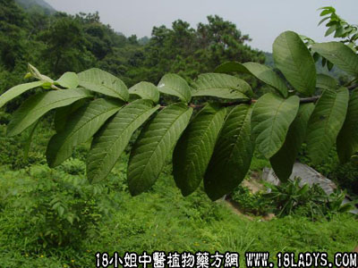

别名：山松、扫把仔、白花松。
植物名：岗松。
生长环境：本品为矮小、多分枝灌木。旷野间随处可见。
分布：我国南部，广州附近常见。
入药部分：根。
采集期：全年。
自采地点：山岗。
性味：性温、味辛、气香。
功能：祛风、化气。
主治、用量和用法：1、黄疸：干根5钱至1两半，清水煎服；2、鼓胀：干根5钱至1两半，清水煎服；3、脚痹、脚气，用法同上。
验方：（洗治皮肤痕痒方）岗松、老虎脷、飞扬草、过塘蛇、九里明、六耳苓、毛麝香各等分，煎水外洗患处。
（方解）风热毒聚于皮表，发生痕痒，用疏风散热解毒之药，治无不验。方中六耳苓、毛麝香、岗松，已有此种作用，加上老虎脷、过塘蛇、九里明长于散热毒，飞扬草着重止痕，又能收敛水湿。配成治皮肤风热毒症之通方。症见于痕痒、湿毒、疮疖、红肿等都有效。
（方歌）皮肤痕痒抓不停，岗松老虎六耳苓，过塘九里飞扬草，毛麝香烧水洗灵。
本文解释权归中药大全，本文地址：https://www.daquan.com/post/1533.html